From a navigator's sighting to a hidden switch in a molecular model
Jeffrey Lee · Lean 4 + Mathlib · %%n_spec%% machine-checked results
Intuition: trust each source in proportion to how precise it is.
From: the classic motivating story for the Kalman filter.
ProbabilityTheory.variance, defined for any function on a probability space.Intuition: variance measures how far a source typically misses, in squared units.
From: standard probability; Mathlib, Probability/Variance.
variance_smul and IndepFun.variance_add. The sum rule needs finite second moments, written MemLp X 2 μ.Intuition: independent errors do not cancel on average, so their variances add.
From: Mathlib, Probability/Variance (variance_smul, IndepFun.variance_add).
$\hat x = \hat x^- + K\,(y - \hat x^-)$: $K = 0$ ignores the lookout, $K = 1$ ignores the navigator. Example: $P = %%f1_P%%$, $R = %%f1_R%%$, prediction $%%f1_pred%%$, sighting $%%f1_y%%$. The best gain $K = %%f1_K%%$ gives the estimate $%%f1_fused%%$ with variance $%%f1_var%%$.
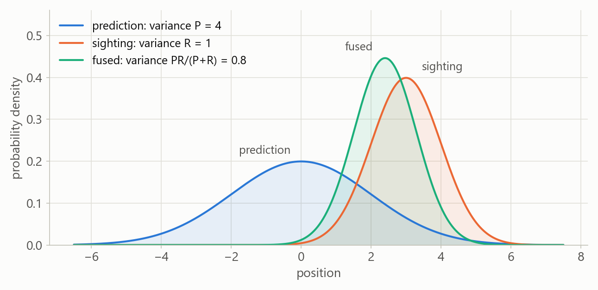
Intuition: the fused estimate is sharper than either source alone.
From: make_figures.py, figure 1.
postVar P R K (Part 1). Part 5 proves the formula from random variables (result A).Intuition: the gain trades prediction error against sighting noise.
From: Kalman.lean, Part 1 (postVar) and Part 5 (variance_update).
$f'(K) = -2(1-K)P + 2KR = 0 \;\Longrightarrow\; K^* = \dfrac{P}{P+R}$, and $f''(K) = 2(P+R) > 0$, so $K^*$ is the minimum.
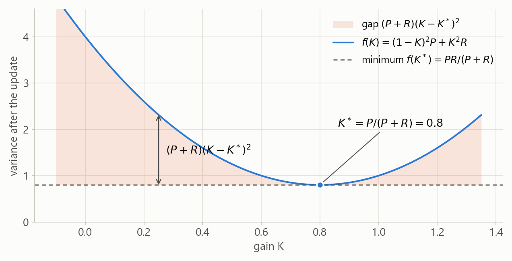
Intuition: the best gain balances the two error sources.
From: textbook derivation; make_figures.py, figure 2 ($P = %%f1_P%%$, $R = %%f1_R%%$).
$f(K^*) = \dfrac{PR}{P+R}$, so $\dfrac{1}{f(K^*)} = \dfrac{1}{P} + \dfrac{1}{R}$. Hence $f(K^*) \le P$ and $f(K^*) \le R$: the blend beats both sources.
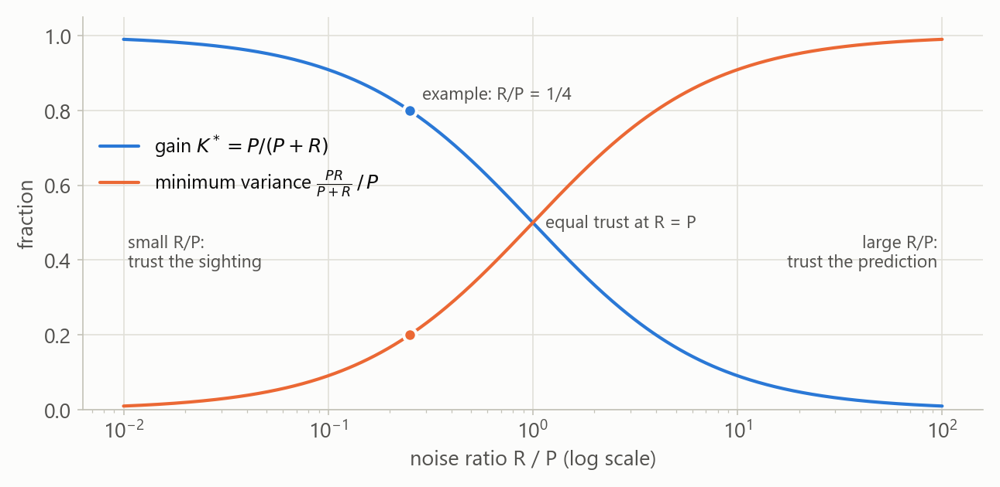
Intuition: precision, one over variance, is what adds up.
From: Kalman.lean, Part 2 (optVar_le); make_figures.py, figure 3.
Intuition: variance sees only the spread of an error, not its shape.
From: standard estimation theory; every Lean result here is a second-moment statement.
Prop, and a proof is a term of that type. Data such as ℝ, ℕ and functions live in Type.Intuition: Lean guarantees that the proof matches the statement, not that the statement matches your idea.
From: Lean 4 documentation (Theorem Proving in Lean 4).
ℝ from Cauchy sequences. Lean cannot run computations on it, so definitions over ℝ are noncomputable.x / 0 = 0. So gain P R = P / (P + R) is defined even when $P + R = 0$.hP : 0 ≤ P and hR : 0 < R, which give $P + R > 0$ (denom_pos).Intuition: every function is total, so side conditions move into hypotheses.
From: Mathlib (Real, div_zero); Kalman.lean, Part 2.
ℝ is registered as a field and an ordered ring: Field ℝ, LinearOrder ℝ, IsStrictOrderedRing ℝ.ring proves identities in any commutative ring. field_simp clears denominators it can prove nonzero.linarith combines linear inequalities; nlinarith also multiplies hypotheses; positivity proves $0 < t$ or $0 \le t$.ℝ.Intuition: algebra is proved once per structure and reused for every instance.
From: Mathlib tactic documentation.
Paper
$f(K) = (1-K)^2 P + K^2 R$
$K^* = \dfrac{P}{P+R}$
$f(K^*) = \dfrac{PR}{P+R}$
Lean (Part 1, by the student)
def postVar (P R K : ℝ) : ℝ :=
(1 - K)^2 * P + K^2 * R
def gain (P R : ℝ) : ℝ := P / (P + R)
def optVar (P R : ℝ) : ℝ := P * R / (P + R)Intuition: definitions are the part a human must check by eye.
From: Kalman.lean, Part 1 (written by the student, copied verbatim).
Calculus needs derivatives and a convexity argument. Lean prefers one algebraic identity: $$f(K) = (P+R)\,(K - K^*)^2 + \frac{PR}{P+R}.$$ A square is never negative, so $f(K) \ge PR/(P+R)$, with equality exactly when $K = K^*$.
theorem complete_square (P R K : ℝ) (hP : 0 ≤ P) (hR : 0 < R) :
postVar P R K = (P + R) * (K - gain P R)^2 + optVar P R := by
unfold gain optVar postVar
have pos := denom_pos P R hP hR
field_simp
ringIntuition: one identity gives both optimality and uniqueness.
From: Kalman.lean, Part 2 (complete_square, the student's proof).
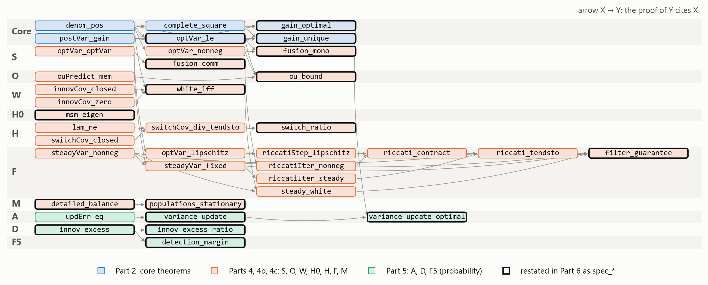
Intuition: each rung is small enough to check in one step.
From: make_figures.py parses Kalman.lean: %%f9_nodes%% theorems of Parts 2, 4, 4b, 4c and 5, %%f9_edges%% citations (figure 9).
Paper
Completing the square: $f(K) = (P+R)(K-K^*)^2 + f(K^*)$.
$P + R > 0$ and $(K-K^*)^2 \ge 0$, so the first term is $\ge 0$ and $f(K^*) \le f(K)$.
Lean (Part 2, by the student)
theorem gain_optimal (P R K : ℝ) (hP : 0 ≤ P) (hR : 0 < R) :
postVar P R (gain P R) ≤ postVar P R K := by
have comp_sq := complete_square P R K hP hR
have pvg := postVar_gain P R hP hR
rw [comp_sq]
rw [pvg]
rw [le_add_iff_nonneg_left]
have pos := denom_pos P R hP hR
have square_plus := sq_nonneg (K - gain P R)
have pos_or_zero := le_of_lt pos
apply mul_nonneg pos_or_zero square_plusIntuition: the Lean proof follows the paper proof line by line.
From: Kalman.lean, Part 2 (gain_optimal, the student's proof).
Paper
If $f(K) = f(K^*)$, then $(P+R)(K-K^*)^2 = 0$.
Since $P + R > 0$, the factor $(K-K^*)^2$ is $0$, so $K = K^*$.
Lean (Part 2, by the student)
theorem gain_unique (P R K : ℝ) (hP : 0 ≤ P) (hR : 0 < R)
(h : postVar P R K = postVar P R (gain P R)) : K = gain P R := by
have pos := denom_pos P R hP hR
have comp_sq := complete_square P R K hP hR
have pvg := postVar_gain P R hP hR
rw[pvg] at h
rw[comp_sq] at h
rw[add_eq_right] at h
cases mul_eq_zero.mp h with
|inl impos => linarith
|inr solve =>
have zero : K - gain P R = 0 := by exact eq_zero_of_pow_eq_zero solve
apply sub_eq_zero.mp zeroIntuition: a product is zero only when a factor is, and $P + R$ never is.
From: Kalman.lean, Part 2 (gain_unique, the student's proof).
Paper
$\dfrac{PR}{P+R} \le P \iff PR \le P(P+R)$, true because $R \le P + R$ and $P \ge 0$.
$\dfrac{PR}{P+R} \le R \iff PR \le R(P+R) \iff 0 \le R^2$.
Lean (Part 2, by the student)
theorem optVar_le (P R : ℝ) (hP : 0 ≤ P) (hR : 0 < R) :
optVar P R ≤ P ∧ optVar P R ≤ R := by
have pos := denom_pos P R hP hR
unfold optVar
field_simp
constructor
· have R_plus_P: R≤P+R := by linarith
exact mul_le_mul_of_nonneg_left R_plus_P hP
· nlinarithIntuition: clearing the positive denominator turns each claim into an inequality between products.
From: Kalman.lean, Part 2 (optVar_le, the student's proof).
| Step | Paper | Lean |
|---|---|---|
| Find the best gain | set $f'(K) = 0$ | complete the square (complete_square) |
| Show it is a minimum | $f'' > 0$ | a square is $\ge 0$ (sq_nonneg) |
| Uniqueness | strict convexity | $(P+R)(K-K^*)^2 = 0 \Rightarrow K = K^*$ (eq_zero_of_pow_eq_zero) |
| Side conditions | "assume $P + R \ne 0$" | hypotheses 0 ≤ P, 0 < R; otherwise x / 0 = 0 |
| Variance rules | quoted from a textbook | proved in Mathlib (variance_smul, IndepFun.variance_add) |
| Algebra | by hand | field_simp, field, ring, linarith, nlinarith |
Intuition: Lean replaces every "clearly" with a named lemma or tactic.
From: Kalman.lean, Parts 2 and 5.
ouPredict).Intuition: a slow hidden state, seen through many noisy windows.
From: the student's research model; Kalman.lean, Part 3.
Intuition: surprises that are too large, or too regular, point to what the model left out.
From: the student's research model; "the 4x diagnostic" comment in Kalman.lean, Part 6.
| Model piece | Lean result (Part 6) | How direct |
|---|---|---|
| One sensor update | spec_gain_optimal, spec_gain_unique, spec_optVar_le | direct (scalar, linear) |
| Coordinate families as sensors | S: spec_fusion_comm, spec_fusion_mono | direct, scalar sensors |
| One OU mode, predict and update | O: spec_ou_bound | direct, one scalar mode |
| Errors as random variables | A: spec_variance_update, …_optimal | direct, independent errors |
| Hidden-coordinate diagnostic | D: spec_innov_excess, …_ratio | direct, under independence |
| White-innovation test | W: spec_white_iff | linear filters only |
| Switch fingerprint | H0: spec_msm_eigen; H: spec_switch_ratio | only the constant-rate two-state approximation, not the state-dependent jump rule |
| Basin switching rule | M: spec_detailed_balance, spec_populations_stationary | the square-root rule, at a fixed slow state |
| The filter over time | F: spec_filter_guarantee; F5: spec_detection_margin | direct, scalar, constant $a$, $Q$, $R$ |
Intuition: scalar linear-Gaussian pieces are captured exactly; the switch only approximately.
From: Kalman.lean, Part 6; modeling notes in README.md.
Lean: optVar (optVar P R₁) R₂ = optVar (optVar P R₂) R₁ and optVar (optVar P R₁) R₂ ≤ optVar P R₁.
Both orders equal $P R_1 R_2 / (P R_1 + P R_2 + R_1 R_2)$. In the figure, prior $P = %%f4_P0%%$ and %%f4_n%% sensors:
all %%f4_norders%% fusion orders end at %%f4_final%%, equal %%f4_spread%%.
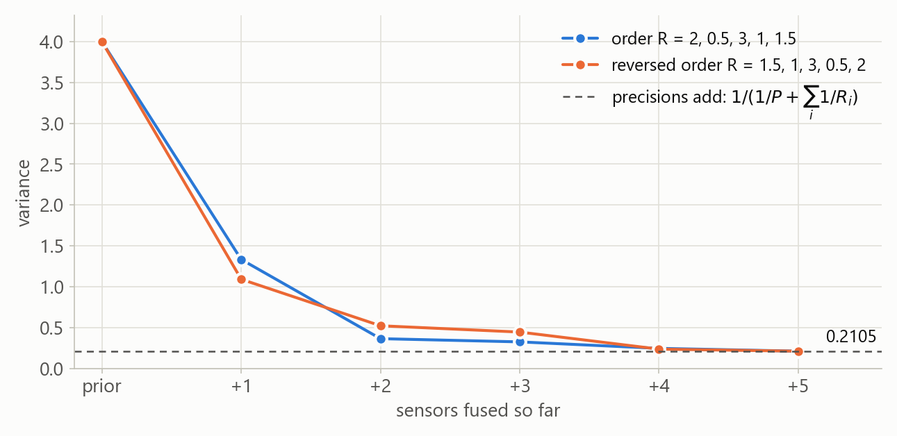
Intuition: the order of the sensors does not matter, and another sensor never hurts.
From: Lean spec_fusion_comm, spec_fusion_mono; make_figures.py, figure 4.
$P_0 = \sigma_2$, $\;P_{n+1} = a^2\,\mathrm{optVar}(P_n, R) + \sigma_2(1 - a^2)$ (ouRiccati).
Lean: if $a^2 \le 1$, $\sigma_2 \ge 0$ and $R > 0$, then $0 \le P_n \le \sigma_2$ for every $n$.
Proof by induction: the update shrinks $P_n$, and the prediction averages it with $\sigma_2$.
Figure: $\sigma_2 = %%f5_s2%%$, $R = %%f5_R%%$, $a \in \{%%f5_avals%%\}$.
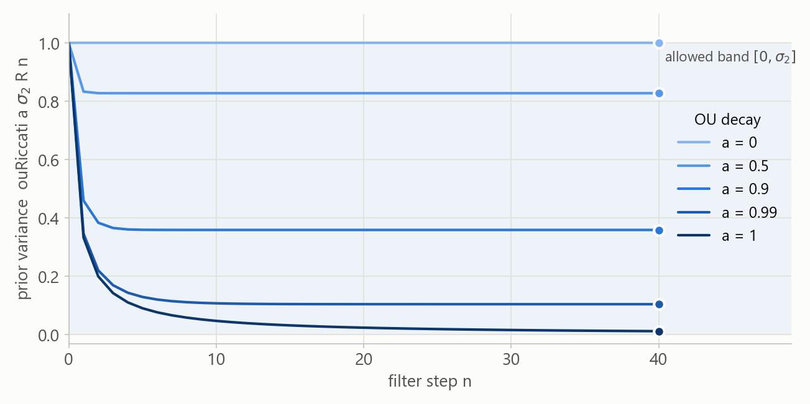
Intuition: filtering never leaves you less certain than knowing only the equilibrium spread.
From: Lean spec_ou_bound; make_figures.py, figure 5.
theorem spec_variance_update {Ω : Type*} [MeasurableSpace Ω] {μ : Measure Ω}
[IsProbabilityMeasure μ] {e v : Ω → ℝ} (he : MemLp e 2 μ) (hv : MemLp v 2 μ)
(hind : IndepFun e v μ) (K : ℝ) :
variance (updErr K e v) μ = postVar (variance e μ) (variance v μ) KupdErr K e v = (1 - K) • e + (-K) • v; scaled copies stay independent (IndepFun.comp); then the sum rule and the scaling rule.spec_variance_update_optimal: the gain built from the true variances beats every other $K$.Intuition: the formula $f(K)$ is now a theorem about random variables, not an assumption.
From: Kalman.lean, Part 5 (variance_update, variance_update_optimal).
The filter expects the innovation $e + v$, with variance $S = \operatorname{Var} e + \operatorname{Var} v$, but sees $e + v + h$. Lean: $\operatorname{Var}(e + v + h) = S + \operatorname{Var} h$, so the ratio is $1 + \tau^2/S > 1$ with $\tau^2 = \operatorname{Var} h$. Figure: %%f6_N%% simulated innovations per channel; channel %%f6_flag%% omits $h$ with $\tau^2 = 3S$, giving %%f6_ratio%% (theory %%f6_theory%%); the other channels give %%f6_clean_lo%% to %%f6_clean_hi%%.
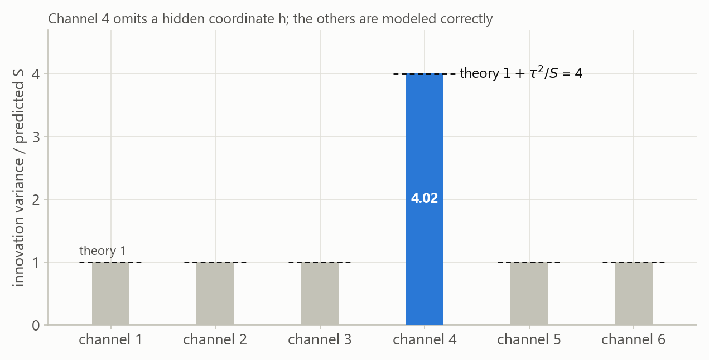
Intuition: an omitted coordinate adds its whole variance to the surprises.
From: Lean spec_innov_excess, spec_innov_excess_ratio; make_figures.py, figure 6.
innovCov: lag 1 is $a(1-K)P - aKR$; each further lag multiplies by the filter pole $a(1-K)$.innovCov_zero), and lag $k+1$ is $(a(1-K))^k$ times lag 1 (innovCov_closed).theorem spec_white_iff (a P R K : ℝ) (ha : a ≠ 0) (hP : 0 ≤ P) (hR : 0 < R) :
(∀ k, innovCov a P R K k = 0) ↔ K = gain P RIntuition: the Kalman gain is exactly the gain that leaves no predictable pattern in the surprises.
From: Lean spec_white_iff (proof in Part 4).
Two-state Markov state model: $\;\texttt{msm}\ p\ q = \begin{pmatrix} 1-p & p \\ q & 1-q \end{pmatrix}$.
Lean: $(p, -q)$ is an eigenvector with eigenvalue $\lambda_2 = 1 - p - q$.
So a deviation from equilibrium shrinks by the factor $\lambda_2$ each step; rare switches ($p, q$ small) give $\lambda_2$ close to 1.
theorem spec_msm_eigen (p q : ℝ) :
(msm p q).mulVec ![p, -q] = (1 - p - q) • ![p, -q]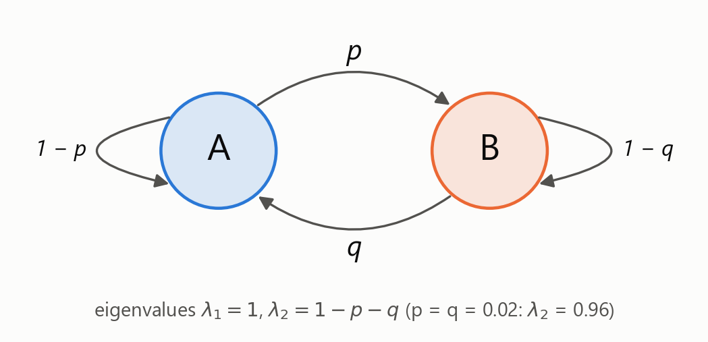
Intuition: a slow switch remembers its state for a long time.
From: Lean spec_msm_eigen; make_figures.py, figure 8.
A filter that ignores the switch has lag covariances $c_{n+1} = \alpha\,c_n + \beta\,\lambda^{n+1}$ (switchCov), with filter pole $\alpha$.
Lean: if $\beta \ne 0$ and $|\alpha| < |\lambda|$, then $c_{n+1}/c_n \to \lambda$.
Simulation: $a = %%f7_a%%$, $R = %%f7_R%%$, $p = q = %%f7_p%%$, %%f7_N%% steps, $\alpha = %%f7_alpha%%$:
fitted decay $\hat\lambda = %%f7_lamhat%%$ vs $\lambda_2 = %%f7_lam2%%$. With the switch known, the largest $|\rho|$ is %%f7_right_max%%.
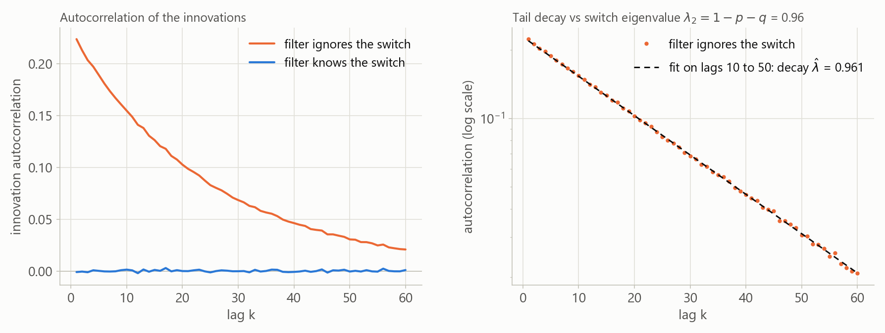
Intuition: the slowest memory in the system sets the tail of the autocorrelation.
From: Lean spec_switch_ratio; make_figures.py, figure 7.
At a fixed slow state, basin $i$ jumps to basin $j$ at rate $k_{ij} = \kappa_{ij}\sqrt{p_j/p_i}$ (jumpRate), with $\kappa_{ij} = \kappa_{ji}$.
M1, detailed balance: $p_i\,k_{ij} = p_j\,k_{ji}$, because both sides equal $\kappa_{ij}\sqrt{p_i\,p_j}$.
M2: so the flows into and out of every basin cancel, and $p^\top L = 0$ for the generator $L$.
Figure: 3 basins, $p = (%%f14_p%%)$, random symmetric $\kappa$; %%f14_jumps%% simulated jumps land within %%f14_occ_err%% of $p$.
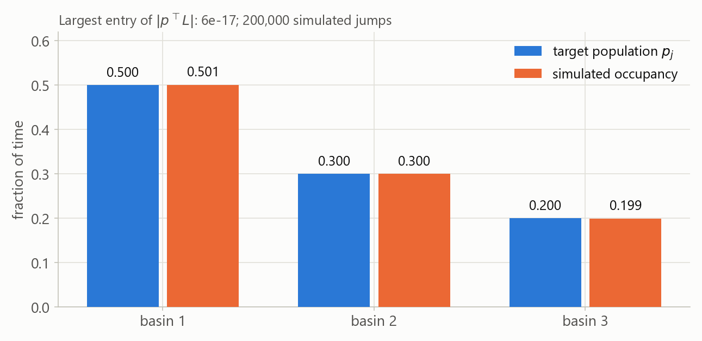
Intuition: every pair of basins trades equal flows, so the populations never drift.
From: Lean spec_detailed_balance, spec_populations_stationary (Part 4c); make_figures.py, figure 14.
The prior variance follows $P_{n+1} = a^2\,\mathrm{optVar}(P_n, R) + Q$ (riccatiIter). If $a^2 < 1$, $a \ne 0$, $Q \ge 0$ and $R > 0$, Lean proves:
(1) two runs differ by at most $(a^2)^n$ times their starting gap; (2) $P_\infty$ (steadyVar) is a nonnegative fixed point; (3) every run tends to $P_\infty$; (4) there the Kalman gain gives white innovations.
Figure: $a = %%f11_a%%$, $Q = %%f11_Q%%$, $R = %%f11_R%%$; the largest gap-to-bound ratio is %%f11_worst%%.
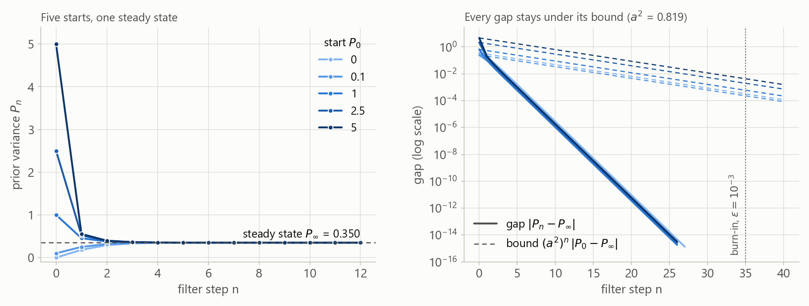
Intuition: the filter forgets how it was started at least as fast as the dynamics forget.
From: Lean spec_filter_guarantee (Part 4b); make_figures.py, figure 11.
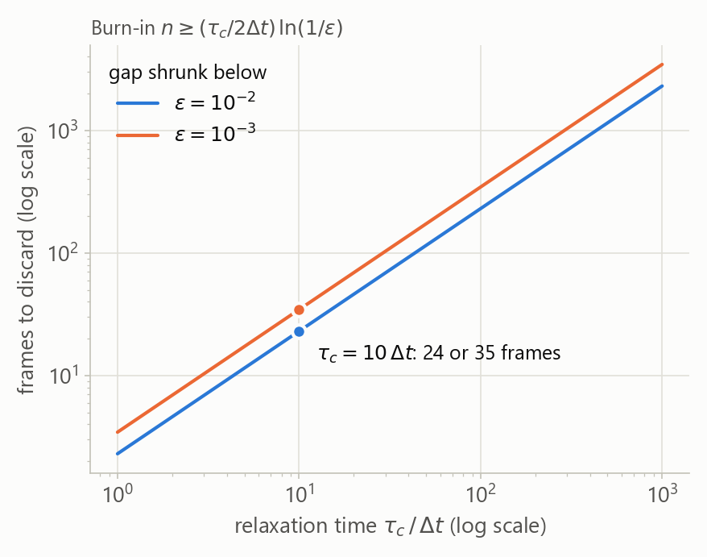
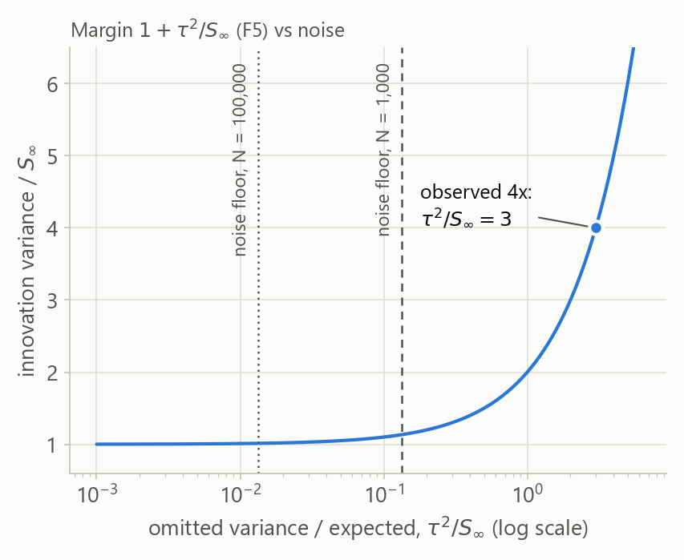
Intuition: discard the burn-in, then judge each channel against $S_\infty$, above the noise floor.
From: Lean spec_filter_guarantee, spec_detection_margin; the $\sqrt{2/N}$ noise level is standard sampling theory, not proved in Lean; make_figures.py, figures 12 and 13.
| Assumption | Used by | Empirical check |
|---|---|---|
| Each slow mode is linear-Gaussian (OU) with constant $a$ and $Q$ | O, F | the autocorrelation of each slow coordinate decays like $a^n$; residuals look Gaussian |
| Sensor noise is independent of the state error and across channels | A, D, F5 | cross-correlations of innovations between channels are near 0 |
| Each channel's noise variance $R$ is known and constant | F, W, D | channels without an omitted coordinate show ratios near 1 (figure 6) |
| The filter has reached steady state | W, F5 | burn-in frames discarded; $P_n$ flat over the rest of the run |
| Jump rates follow the square-root rule at a fixed slow state | M | transition counts in bins of the slow coordinates satisfy $p_i k_{ij} \approx p_j k_{ji}$ |
| The switch is a constant-rate two-state chain | H0, H | dwell times in each basin are exponentially distributed |
Intuition: the theorems turn assumptions into conclusions; the data must still back the assumptions.
From: the hypotheses of the Part 6 statements in Kalman.lean; modeling notes in README.md.
Read the Part 1 and Part 3 definitions and the %%n_spec%% statements in Part 6. Lean checks the %%n_proved%% proofs in Parts 2, 4, 4b, 4c and 5; each Part 6 result is a one-line citation of one of them.
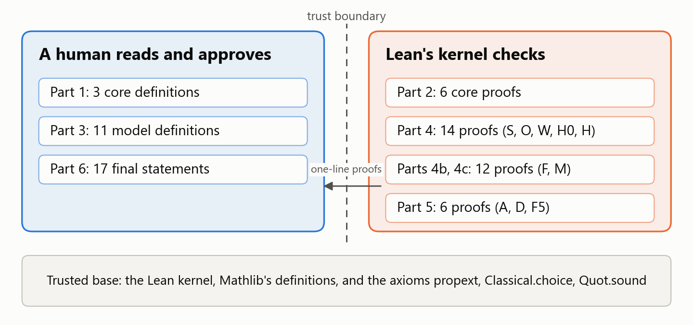
Intuition: read the definitions and statements; the kernel checks the rest.
From: Kalman.lean layout; make_figures.py, figure 10.
lake build LoVe.Final_Project.Kalman finishes with no errors and no sorry; a search for sorry, admit and native_decide finds nothing.
#print axioms for every result:
'Kalman.spec_gain_optimal' depends on axioms: [propext, Classical.choice, Quot.sound]
'Kalman.spec_gain_unique' depends on axioms: [propext, Classical.choice, Quot.sound]
'Kalman.spec_optVar_le' depends on axioms: [propext, Classical.choice, Quot.sound]
'Kalman.spec_fusion_comm' depends on axioms: [propext, Classical.choice, Quot.sound]
'Kalman.spec_fusion_mono' depends on axioms: [propext, Classical.choice, Quot.sound]
'Kalman.spec_ou_bound' depends on axioms: [propext, Classical.choice, Quot.sound]
'Kalman.spec_variance_update' depends on axioms: [propext, Classical.choice, Quot.sound]
'Kalman.spec_variance_update_optimal' depends on axioms: [propext, Classical.choice, Quot.sound]
'Kalman.spec_innov_excess' depends on axioms: [propext, Classical.choice, Quot.sound]
'Kalman.spec_innov_excess_ratio' depends on axioms: [propext, Classical.choice, Quot.sound]
'Kalman.spec_white_iff' depends on axioms: [propext, Classical.choice, Quot.sound]
'Kalman.spec_msm_eigen' depends on axioms: [propext, Classical.choice, Quot.sound]
'Kalman.spec_switch_ratio' depends on axioms: [propext, Classical.choice, Quot.sound]
'Kalman.spec_detailed_balance' depends on axioms: [propext, Classical.choice, Quot.sound]
'Kalman.spec_populations_stationary' depends on axioms: [propext, Classical.choice, Quot.sound]
'Kalman.spec_filter_guarantee' depends on axioms: [propext, Classical.choice, Quot.sound]
'Kalman.spec_detection_margin' depends on axioms: [propext, Classical.choice, Quot.sound]Intuition: only Lean's standard axioms appear: no sorryAx, no new axioms.
From: lake build LoVe.Final_Project.Kalman output (Lean and Mathlib v4.33.0).
Here: the student reviewed Parts 1, 3 and 6. The prompt forbade changing them, and a script compared them with the reviewed text after the proofs were done.
Intuition: a proof is only as good as the statement it proves.
From: Alexeev / Tao, Erdős #367.
Here: the prompt gave a short informal proof for every result, and each Lean proof follows its steps. For W: closed form, then lag 1, then both directions.
Intuition: a plan in plain math keeps the formal proof on track.
From: Jiang et al., Draft, Sketch, and Prove, arxiv.org/abs/2210.12283.
have … := by sorry, compile the skeleton, then prove the pieces.Here: the first complete file compiled with a sorry at every leaf, so the plan type-checked before any proof was written.
Intuition: check the plan before doing the work.
From: DeepSeek-Prover-V2, arxiv.org/abs/2504.21801.
Here: lean-lsp-mcp was not available in this session, so Claude Code compiled with lake env lean using the lakefile's options, and printed goals with trace_state.
Intuition: real error messages beat guesses.
sorry, compile, repeat. Try tactics in a fixed order: rfl, simp, ring, linarith, nlinarith, positivity, grind, exact?, apply?, aesop.Here: the skill was not installed, so its workflow came from the prompt. Each failure, such as a rw that unfolded the wrong occurrence, was fixed from the error message before moving on. For the capstones each compile took about two minutes, so the twelve sorrys were filled in one batch; Lean reports errors per lemma, so failures would still have stayed local.
Intuition: small steps keep every error local.
Here: the prompt used tags such as <hard_rules>, <statements>, <informal_proofs> and <verification>, and explained why the statements must stay fixed.
Intuition: a model follows a rule more reliably when it knows why the rule exists.
From: platform.claude.com/docs/en/build-with-claude/prompt-engineering/use-xml-tags; platform.openai.com/docs/guides/reasoning-best-practices.
gain 1 1 = 1 / 2 and ouRiccati a σ2 R 0 = σ2, and were deleted at the end.#print axioms listed every dependency.linarith(_). The student then finished all five, and Part 2 now uses those proofs verbatim.Intuition: check the statements as carefully as the proofs.
From: this project's workflow and Kalman.lean, Part 2.
ouRiccati, riccatiIter, innovCov and switchCov are stated as variance recursions, not derived from a stochastic process in Lean. Only A, D and F5 use random variables.Intuition: the verified core is exact; the model around it is approximated.
From: Kalman.lean, Parts 3 and 6.
Summary
Future work
Intuition: a small verified core is a foundation the full model can build on.
From: this project.